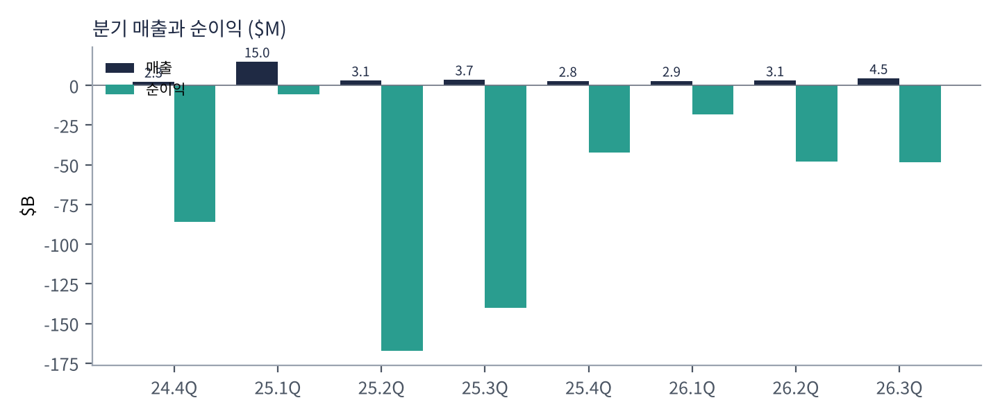
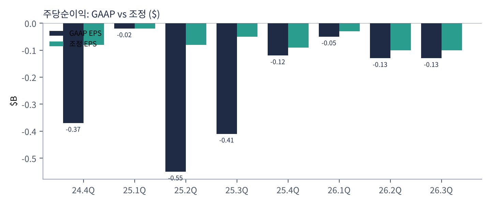
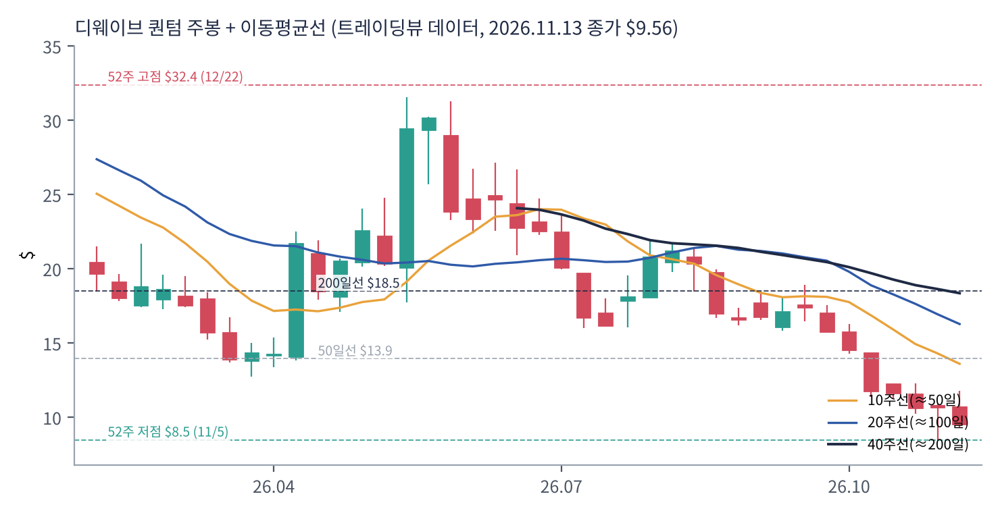
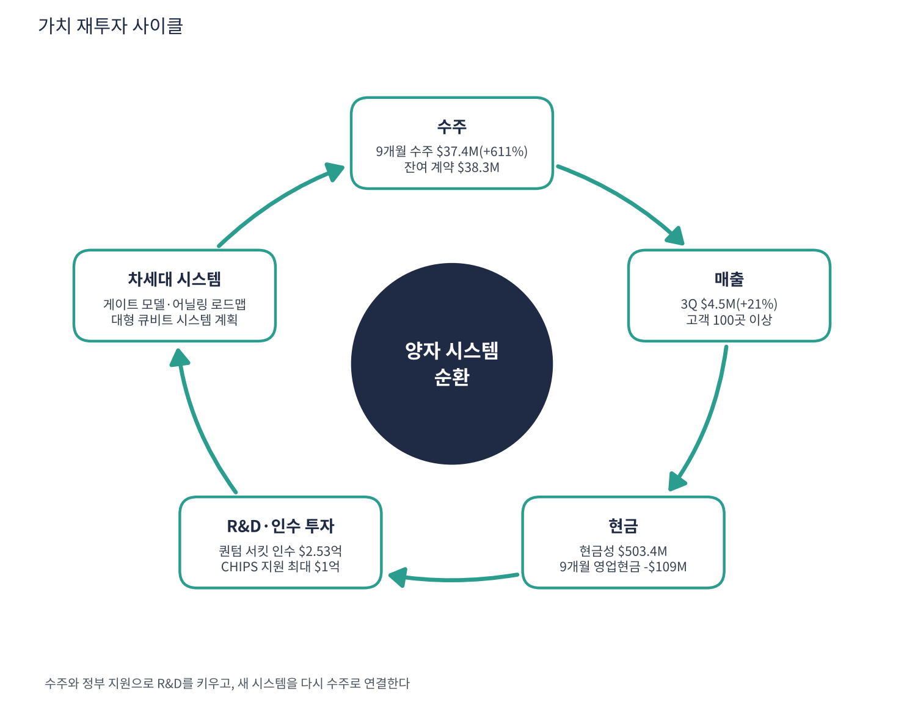

디웨이브 퀀텀은 양자 어닐링 컴퓨터를 만들고 클라우드로 빌려주는 회사다. 최근에는 게이트 방식 양자컴퓨터 회사 퀀텀 서킷츠를 인수했다. 수주는 빠르게 늘지만 매출이 아주 작고 적자가 큰 초기 단계 회사다.
| 항목 | 내용 |
|---|---|
| 종목 | D-Wave Quantum (QBTS) · NASDAQ · 양자컴퓨팅 |
| 밸류에이션 | PER 적자 · P/S 278.9배 (11/13 종가 $9.56) |
| 최근 분기(3Q26) | 매출 $4.5M(+21%), 순손실 $48.2M |
| 수주 | 9개월 신규 수주 $3.74억(+611%), 잔여 계약 $0.38억 |
| 투자·인수 | 퀀텀 서킷츠 인수 $2.53억, CHIPS 협약 최대 $1.0억(보도) |
| 현금·부채 | 스캐너: 현금 $5.03억, 차입금 $0.57억, TTM 잉여현금 −$1.42억 |
| 직책 | 인물 | 역할·특징 |
|---|---|---|
| CEO | 앨런 바라츠 | 양자 어닐링과 게이트 방식 병행 전략 강조 |
경영 스타일: '어닐링으로 지금 팔고 게이트로 미래를 준비'. 현금 $5.0억으로 영업현금 소진(9개월 −$1.09억)을 버티는 구조다. 지출은 인수와 연구에 집중된다.
최적화 문제에 강한 어닐링 방식 컴퓨터를 클라우드로 제공한다.
퀀텀 서킷츠 인수로 오류 보정 가능한 게이트 방식 로드맵을 확보하려 한다.
다음 실적발표는 세 가지 질문에 답하는 자리다.
1. 매출 전환이 이번 분기에 개선되나?
2. 악재 '매출 규모' 부담이 줄어드나?
3. PEG 판정이 바뀌나?
한 줄 판정 규칙: 첫 질문의 매출 전환이 좋아지면 약한 고리가 풀리고, 그렇지 않으면 현재 사이클의 약점이 그대로 남는다.
일정: 다음 발표일은 확인 필요(이번 분기 발표 후 일정 미확정). 위 현재값은 이 보고서의 기존 숫자다.
| 분기 | 매출 ($M) | 순이익 ($M) | EPS | 조정 EPS | 특이 사항 |
|---|---|---|---|---|---|
| 2024.4Q | 2.3 | -86.1 | -0.37 | -0.08 | |
| 2025.1Q | 15.0 | -5.4 | -0.02 | -0.02 | 시스템 1대 판매 포함(보도) |
| 2025.2Q | 3.1 | -167.3 | -0.55 | -0.08 | |
| 2025.3Q | 3.7 | -140.0 | -0.41 | -0.05 | |
| 2025.4Q | 2.8 | -42.3 | -0.12 | -0.09 | 4분기 값 근사* |
| 2026.1Q | 2.9 | -18.4 | -0.05 | -0.03 | |
| 2026.2Q | 3.1 | -48.0 | -0.13 | -0.10 | |
| 2026.3Q | 4.5 | -48.2 | -0.13 | -0.10 | 3Q 매출·순손실·조정 EPS는 8-K 발표·트레이딩뷰 기준 |


* 4분기 값은 '연간 − 1~3분기 합' 근사치. 2025년 1분기 매출 $0.15억은 시스템 판매가 포함된 일회성이다(보도). 3분기 값은 10-Q가 아니라 8-K 발표와 트레이딩뷰 Reported를 썼다. 순손실에는 워런트 평가손익이 섞여 변동이 크다(확인 필요).
흐름 요약: 분기 매출은 $0.03~0.05억에서 정체했다가 3분기 $0.045억으로 올랐다. 조정 EPS는 −$0.10 안팎으로 안정적이고, GAAP 순손실은 워런트 영향으로 크게 출렁인다. 분기 설비투자는 구하지 못했다.
| 항목 | 값 | 비고 |
|---|---|---|
| 3Q 매출 | $0.045억 | +21% |
| 9개월 신규 수주 | $0.374억 | +611% |
| 잔여 계약(RPO) | $0.383억 | 매출로 전환될 물량 |
수주가 매출보다 빠르다. 부문별·고객별 비중은 구하지 못했다.
디웨이브는 '양자 컴퓨터를 실제 업무에 쓰게 만드는 회사'가 되려 한다.
| 축 | 최근 움직임 |
|---|---|
| 상용화 | 클라우드 이용·시스템 판매 수주 확대 |
| 게이트 방식 | 퀀텀 서킷츠 인수 |
| 정부 | CHIPS 협약 최대 $1.0억(보도) |
| 위험 | 매출이 작고 연 현금 소진 $1.4억 |

| 이동평균 | 값 | 종가 대비 | 해석 |
|---|---|---|---|
| 5일선 | $10.40 | -8.1% | 현재가가 아래 |
| 20일선 | $10.96 | -12.8% | 현재가가 아래 |
| 50일선 | $13.94 | -31.4% | 현재가가 아래 |
| 100일선 | $16.68 | -42.7% | 현재가가 아래 |
| 200일선 | $18.50 | -48.3% | 현재가가 아래 (-48%) |
주봉 흐름: 52주 고점 $32.4(2025.12.22) 이후 하락해 2026.11.5 저점 $8.48을 찍었다. 현재가 $9.56은 모든 이동평균선 아래다.
| 규칙 | 기준 | 현재 값 | 신호 |
|---|---|---|---|
| 장기 추세 필터 | 종가 vs 200일선 | $9.56 < $18.50 | 매도 |
| 중장기 교차 | 50일선 vs 200일선 | $13.94 < $18.50 | 매도 |
| 단기 교차 | 20일선 vs 50일선 | $10.96 < $13.94 | 매도 |
| 돈키언 채널 | 55일 고가 $18.93 / 저가 $8.48 | 중간값 $13.71 아래 | 매도 |
| 1개월 모멘텀 | 21거래일 수익률 | -25.4% (기준 $12.81) | 매도 |
| 3개월 모멘텀 | 63거래일 수익률 | -54.2% (기준 $20.87) | 매도 |
| 6개월 모멘텀 | 126거래일 수익률 | -53.0% (기준 $20.35) | 매도 |
| 12개월 모멘텀 | 252거래일 수익률 | -63.8% (기준 $26.40) | 매도 |
| 종합 (8개 평균) | -1.00 | 강한 매도 |
해석: 8개 신호 중 매수 0개, 매도 8개(점수 -1.00, 강한 매도)다. 14일 ATR $0.97 (10.1%).
| 가격·조건 | 무엇이 바뀌나 | 의미 |
|---|---|---|
| $18.50 돌파 | 200일선 | 매도 → 매수 |
| 50일선이 200일선 위로 | 50/200 교차 | 매도 → 매수 |
| 20일선이 50일선 위로 | 20/50 교차 | 매도 → 매수 |
| $13.71 돌파 | 돈키언 중간값 | 매도 → 매수 |
| $12.81 돌파 | 1개월 기준가 | 매도 → 매수 |
| 구분 | 가격대 | 근거 |
|---|---|---|
| 저항 1 | $10.4 ~ 11.0 | 5일선 $10.4, 20일선 $11.0 |
| 저항 2 | $13.9 ~ 16.7 | 50일선 $13.9, 100일선 $16.7 |
| 지지 1 | $8.48 | 52주 저점(11/5) |
| 지지 2 | 추가 하단 없음 | 이탈 시 신저점 |
전 신호가 매도(−1.0)이고 14일 ATR이 $0.97로 가격 대비 변동이 크다. 5일선($10.4) 회복 전에는 비중을 두지 않고, 종가로 $8.48을 내주면 정리한다. 수주의 매출 전환이 재료다.
| 악재 요인 | 내용 | 강도 |
|---|---|---|
| 매출 규모 | 3Q $0.045억 | 높음 |
| 현금 소진 | TTM −$1.42억 | 중간 |
| 희석 | 주식 발행·워런트 영향 가능 | 중간 |
| 추세 | 52주 저점 갱신 중 | 높음 |
| 티커 | 회사 | PER(TTM) | PEG | P/S | EPS 성장(YoY) |
|---|---|---|---|---|---|
| QBTS | 디웨이브 퀀텀 | 적자 | – | 278.90배 | – |
| IONQ | 아이온큐 | 75.6배 | – | 32.52배 | – |
| RGTI | 리게티 | 적자 | – | – | – |
| QUBT | 퀀텀 컴퓨팅 | 적자 | – | 69.30배 | – |
양자 동종 대부분이 적자라 PER·PEG가 없다. P/S는 스캐너 기준이며 일부 값은 요약 값이다(확인 필요).
디웨이브는 현금 $5.0억으로 연 $1.4억 소진을 3.5년 정도 버틴다(내 계산). 인수 현금 지출이 이미 반영됐는지는 확인하지 못했다.
| 지표 | 값 | 계산·출처 | 해석 |
|---|---|---|---|
| 현금 | $5.03억 | 스캐너 | – |
| 총차입금 | $0.57억 | 스캐너 | 순현금 약 $4.46억(내 계산) |
| TTM 잉여현금흐름 | −$1.42억 | 스캐너 | 연 소진 |
| 런웨이 | 약 3.5년 | $5.03억 ÷ $1.42억(내 계산) | 인수 비용 확인 필요 |
| 기준 | 값 | 비고 |
|---|---|---|
| P/S (TTM) | 278.9배 | 스캐너. 매출이 작아 의미 낮음 |
| 동종 | IONQ 32.5 | 스캐너 |
해석: 매출 대비 가치는 설명이 어렵다. 수주 잔액과 인수 효과가 확인되어야 한다.
| 지표 | 값 | 판정 |
|---|---|---|
| PER | 적자 | 산출 불가 |
| EBITDA(TTM) | 약 −$1.81억 | 스캐너 |
| EV / EBITDA | 산출 불가 | 마이너스 |
| 방식 | PER | EPS 성장률 | PEG | 판정 |
|---|---|---|---|---|
| 트레이딩뷰 (GAAP TTM) | 적자 | – | – | PER가 없어 산출 불가 |
판정: PEG 산출 불가. 수주 증가와 현금 런웨이로 본다.

디웨이브의 사이클은 수주 → 매출 전환 → 연구 재투자 → 인수·정부 자금 → 더 큰 수주다. 수주는 크지만 매출로 바뀌는 속도가 느려 사이클이 아직 현금 보유에 기대고 있다.
| 고리 | 현재 숫자 | 고리 강도 | 약해지는 신호 |
|---|---|---|---|
| ① 수주 | 9개월 $3.74억(+611%) | 강함 | 수주 둔화 |
| ② 매출 전환 | 3Q $0.045억, RPO $0.38억 | 약함 | 전환 지연 |
| ③ 연구 재투자 | TTM 잉여현금 −$1.42억 | 보통 | 비용 급증 |
| ④ 인수·정부 자금 | 퀀텀 서킷츠, CHIPS | 보통 | 통합 비용 |
| ⑤ 현금 보유 | $5.03억 | 보통 | 소진 가속 |
구조: ①만 강하다. 매출 전환(②)이 확인 지점이다.